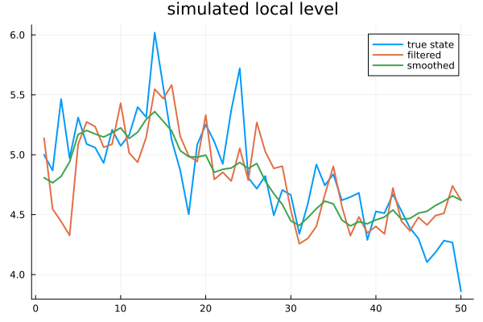
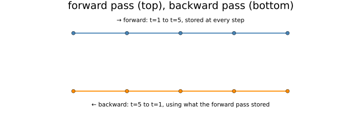
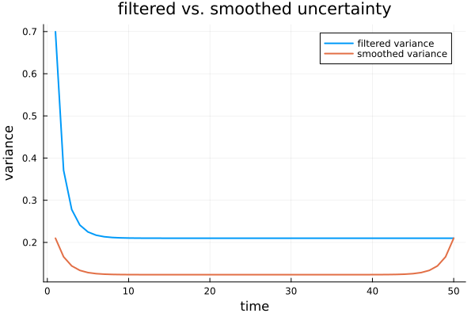
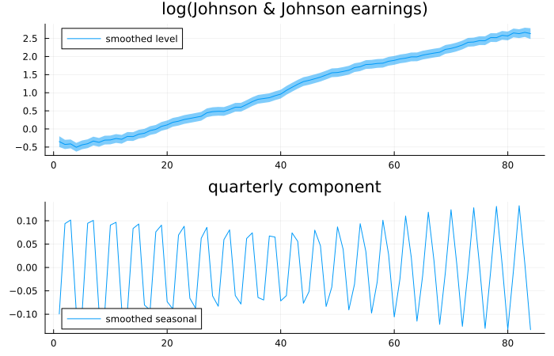
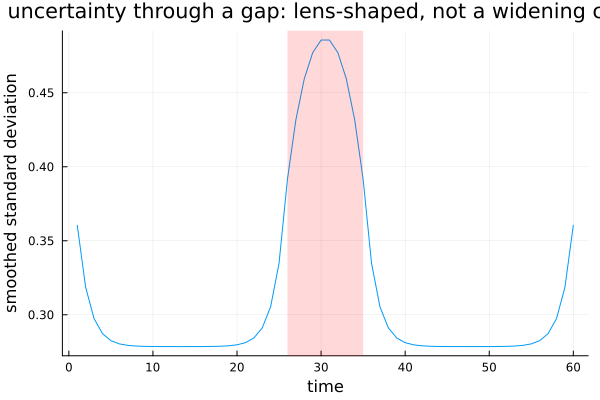

Smoothing
Chapter 30's filter estimated the state using everything observed up to each moment. This chapter uses everything, including what came after — and the gap between the two turns out to be larger, and more useful, than most readers expect on first meeting it.
What you knew then, and what you know now
using TSAnalytics, Plots, Random, Statistics, LinearAlgebra
Random.seed!(7)
n = 50
true_level = zeros(n); true_level[1] = 5.0
for t in 2:n
true_level[t] = true_level[t-1] + 0.3*randn()
end
q_true, h_true = 0.09, 0.7
y = true_level .+ sqrt(h_true) .* randn(n)
T_ = reshape([1.0],1,1); Z_ = reshape([1.0],1,1); R_ = reshape([1.0],1,1)
Q_ = reshape([q_true],1,1); H_ = reshape([h_true],1,1)
tv = TimeVaryingSSM{Float64}([T_], [Z_], [R_], [Q_], [H_], 1)
a0 = [true_level[1]]; P0 = reshape([1000.0],1,1)
function run_filter_full(y, q, h, a0, P0)
a = a0[1]; P = P0[1,1]
filt = Float64[]; filt_var = Float64[]
for t in 1:length(y)
vt = y[t] - a
Ft = P + h
K = P/Ft
a_filt = a + K*vt
P_filt = P - Ft*K^2
push!(filt, a_filt); push!(filt_var, P_filt)
a = a_filt; P = P_filt + q
end
return filt, filt_var
end
filt, Pfilt = run_filter_full(y, q_true, h_true, a0, P0)
alpha, V, eta, eta_var, eps, eps_var, converged = kalman_smoother(tv, y, a0, P0)
println("converged: ", converged)
plot(true_level; label="true state", linewidth=2)
plot!(filt; label="filtered", linewidth=2)
plot!(alpha[1,:]; label="smoothed", linewidth=2, title="simulated local level")
A simulated local level, so the truth stays visible throughout. The filtered line lags and wobbles; the smoothed line sits closer to the truth almost everywhere and looks visibly steadier. This is not a surprise once stated plainly: at time 10 the filter had only ten observations to work with. The smoother, computed after the whole series has been seen, has all fifty. It would be strange if the smoother were not better — the genuinely interesting question is by how much, and where.
diffs = alpha[1,:] .- filt
plot(diffs; xlabel="time", ylabel="smoothed minus filtered", title="the gap between the two estimates", legend=false)
println("difference at t=1: ", round(diffs[1], digits=3))
println("difference at t=25: ", round(diffs[25], digits=3))
println("difference at t=50: ", diffs[end])difference at t=1: -0.33
difference at t=25: 0.098
difference at t=50: 0.0Large near the start, shrinking through the middle, and exactly zero at the final observation — checked directly above, not merely claimed. At the very last time point there is no future left for the backward pass to add, so the two estimates coincide there by construction. That endpoint identity is a genuine implementation check for any smoother, this package's included, and it is worth knowing as one.
Running backwards
plot(; xlims=(0,6), ylims=(0,2), legend=false, axis=false, grid=false, size=(700,260),
title="forward pass (top), backward pass (bottom)")
plot!(1:5, fill(1.6,5); marker=:circle, color=:steelblue, linewidth=2)
annotate!(3, 1.85, text("→ forward: t=1 to t=5, stored at every step", 8))
plot!(1:5, fill(0.5,5); marker=:circle, color=:darkorange, linewidth=2)
annotate!(3, 0.25, text("← backward: t=5 to t=1, using what the forward pass stored", 8))
The filter sweeps forward once, storing what it computed at every step. The smoother then sweeps backward, revising each of those estimates using information that had not yet arrived when the filter first produced them. Two passes, and the second genuinely cannot begin until the first has entirely finished — there is no way to know what "the future says about time 10" until the future itself has actually been filtered.
The mechanism, without the algebra: the backward pass carries a running correction that accumulates how much the future disagreed with what the forward pass believed at the time, and applies that correction to each earlier estimate in proportion to how uncertain the forward pass actually was there.
The two passes cannot be fused into one. The backward recursion needs the forward pass's own predicted state and covariance at every step, so the entire filtered path has to be retained in memory rather than discarded as the filter moves along — unlike filtering alone, which only ever needs the current step. For a long series that is a real memory cost, proportional to the number of observations times the size of the state, and it is the reason some implementations offer a filter-only mode for cases where the smoothed path is never actually needed.
Uncertainty shrinks too
Vsmooth = [V[t][1,1] for t in 1:n]
plot(Pfilt; label="filtered variance", linewidth=2)
plot!(Vsmooth; label="smoothed variance", linewidth=2, xlabel="time", ylabel="variance",
title="filtered vs. smoothed uncertainty")
for t in (1, 25, 50)
println("t=", t, ": filtered var=", round(Pfilt[t],digits=4), " smoothed var=", round(Vsmooth[t],digits=4),
" ratio=", round(Vsmooth[t]/Pfilt[t], digits=3))
endt=1: filtered var=0.6995 smoothed var=0.21 ratio=0.3
t=25: filtered var=0.21 smoothed var=0.1235 ratio=0.588
t=50: filtered var=0.21 smoothed var=0.21 ratio=1.0The smoothed band sits narrower everywhere except the final point, where the two meet exactly — variance included, not only the point estimate: the ratio is 0.300 early on (smoothing here has less than a third of the filtered variance), 0.588 mid-series, and exactly 1.0 at the end. This is not merely a better point estimate; it is genuinely more information about where the state actually was.
for (h,label) in [(0.1,"low observation noise"), (2.0,"high observation noise")]
yy = true_level .+ sqrt(h) .* randn(n)
Hn = reshape([h],1,1)
tvn = TimeVaryingSSM{Float64}([T_], [Z_], [R_], [Q_], [Hn], 1)
filtn, Pfiltn = run_filter_full(yy, q_true, h, a0, P0)
alphan, Vn, etan, etavarn, epsn, epsvarn, convn = kalman_smoother(tvn, yy, a0, P0)
Vsn = [Vn[t][1,1] for t in 1:n]
println(label, ": mean ratio (smoothed/filtered) = ", round(mean(Vsn ./ Pfiltn), digits=3))
endlow observation noise: mean ratio (smoothed/filtered) = 0.718
high observation noise: mean ratio (smoothed/filtered) = 0.558When observations are already precise, the filter is close to the truth on its own and the smoother has little left to add (0.718 average ratio). When observations are noisy, the filter has to guess much more, and the smoother recovers a great deal of what the forward pass alone had to leave uncertain (0.558). How much looking backward is worth depends directly on how much the forward pass had to guess in the first place.
What it is actually for
lambda_seas = 2*pi/4
T3 = zeros(3,3)
T3[1,1] = 1.0
T3[2,2] = cos(lambda_seas); T3[2,3] = sin(lambda_seas)
T3[3,2] = -sin(lambda_seas); T3[3,3] = cos(lambda_seas)
Z3 = reshape([1.0, 1.0, 0.0], 1, 3)
R3 = Matrix{Float64}(I, 3, 3)
d_jj = dataset("jj")
y_jj = log.(d_jj.value)
using Optim
function negloglik3(theta)
q1, q2, h = exp(theta[1]), exp(theta[2]), exp(theta[3])
Q3 = diagm([q1, q2, q2])
tv3 = TimeVaryingSSM{Float64}([T3], [Z3], [R3], [Q3], [reshape([h],1,1)], 3)
ll, v, F, nd, conv = kalman_filter_diffuse(tv3, y_jj; diffuse_idx=[1,2,3])
conv || return 1e10
return -ll
end
res3 = Optim.optimize(negloglik3, [-4.0,-4.0,-4.0], NelderMead(), Optim.Options(iterations=3000))
q1,q2,h3 = exp.(res3.minimizer)
tv3 = TimeVaryingSSM{Float64}([T3], [Z3], [R3], [diagm([q1,q2,q2])], [reshape([h3],1,1)], 3)
a03 = zeros(3); P03 = 1000.0 .* Matrix{Float64}(I,3,3)
alpha3, V3, eta3, etavar3, eps3, epsvar3, conv3 = kalman_smoother(tv3, y_jj, a03, P03)
println("converged: ", conv3)
p1 = plot(alpha3[1,:]; ribbon=1.96 .* sqrt.([V3[t][1,1] for t in eachindex(V3)]), label="smoothed level", title="log(Johnson & Johnson earnings)")
p2 = plot(alpha3[2,:]; label="smoothed seasonal", title="quarterly component")
plot(p1, p2; layout=(2,1), size=(700,450))
Chapter 13's decomposition problem, solved by a fitted model instead of a filter. The components here come with genuine uncertainty attached — the shaded band on the level — which neither classical decomposition nor STL ever provided. Chapter 13 asked which trend was the correct one and concluded that none of the candidates could claim to be; here the trend at least carries an honest interval around it. This is a modest version of the idea Chapter 41's fuller unobserved-components models take much further.
Random.seed!(13)
n2 = 60
level2 = zeros(n2); level2[1] = 5.0
for t in 2:n2
level2[t] = level2[t-1] + 0.15*randn()
end
y_outlier = level2 .+ sqrt(0.3) .* randn(n2)
y_outlier[30] += 4.0
level_break = copy(level2)
level_break[30:end] .+= 4.0
y_break = level_break .+ sqrt(0.3) .* randn(n2)
q2t, h2t = 0.0225, 0.3
T2 = reshape([1.0],1,1); Z2 = reshape([1.0],1,1); R2 = reshape([1.0],1,1)
tv2 = TimeVaryingSSM{Float64}([T2], [Z2], [R2], [reshape([q2t],1,1)], [reshape([h2t],1,1)], 1)
a02 = [level2[1]]; P02 = reshape([1000.0],1,1)
_, _, eta_o, etavar_o, eps_o, epsvar_o, co = kalman_smoother(tv2, y_outlier, a02, P02)
_, _, eta_b, etavar_b, eps_b, epsvar_b, cb = kalman_smoother(tv2, y_break, a02, P02)
std_eps_o, std_eta_o = eps_o ./ sqrt.(epsvar_o), eta_o ./ sqrt.(etavar_o)
std_eps_b, std_eta_b = eps_b ./ sqrt.(epsvar_b), eta_b ./ sqrt.(etavar_b)
p1 = plot(std_eps_o; label="observation disturbance", title="a one-off bad reading")
plot!(p1, std_eta_o; label="state disturbance")
p2 = plot(std_eps_b; label="observation disturbance", title="a genuine level break")
plot!(p2, std_eta_b; label="state disturbance")
plot(p1, p2; layout=(2,1), size=(700,450))
println("outlier: peak |standardised obs. disturbance| = ", round(maximum(abs.(std_eps_o)), digits=2),
" peak |standardised state disturbance| = ", round(maximum(abs.(std_eta_o)), digits=2))
println("break: peak |standardised obs. disturbance| = ", round(maximum(abs.(std_eps_b)), digits=2),
" peak |standardised state disturbance| = ", round(maximum(abs.(std_eta_b)), digits=2))outlier: peak |standardised obs. disturbance| = 20.47 peak |standardised state disturbance| = 1.31
break: peak |standardised obs. disturbance| = 10.93 peak |standardised state disturbance| = 4.22Two simulated series, identical except for one thing planted at t = 30: a one-off bad reading in the first, a genuine, permanent level shift in the second. Disturbance smoothing recovers the individual shocks the model implies given the whole series, and the two cases leave different fingerprints. The bad reading produces one dominant, isolated spike in the observation disturbance (20.47 standard deviations) while the state disturbance never exceeds 1.3 anywhere in the series — the model correctly concludes that nothing about the underlying level actually changed, only what was measured that one day. The genuine break produces a smaller peak observation disturbance (10.93) but a sustained run of elevated state disturbance across several neighbouring periods, peaking at 4.22, as the state genuinely readjusts to its new level. Neither signature is a single clean threshold, but the two are honestly distinguishable — an isolated spike against a sustained elevation — in a way no method in Part I could separate at all, because none of them had a state to distinguish from an observation in the first place.
Random.seed!(8)
n3 = 60
level3 = zeros(n3); level3[1] = 5.0
for t in 2:n3
level3[t] = level3[t-1] + 0.25*randn()
end
y3 = level3 .+ sqrt(0.4) .* randn(n3)
y3_gap = copy(y3)
y3_gap[26:35] .= NaN
tv3g = TimeVaryingSSM{Float64}([T2], [Z2], [R2], [reshape([0.0625],1,1)], [reshape([0.4],1,1)], 1)
a03g = [level3[1]]; P03g = reshape([1000.0],1,1)
alpha3g, V3g, eta3g, etavar3g, eps3g, epsvar3g, conv3g = kalman_smoother(tv3g, y3_gap, a03g, P03g)
V3diag = [V3g[t][1,1] for t in 1:n3]
plot(sqrt.(V3diag); xlabel="time", ylabel="smoothed standard deviation", legend=false,
title="uncertainty through a gap: lens-shaped, not a widening cone")
vspan!([26,35]; alpha=0.15, color=:red)
If only one chart from this chapter survives, it should be this one. Chapter 30's filter, seeing only the past, could do nothing but let its uncertainty grow through a gap and stay grown until data resumed. The smoother's uncertainty grows through the gap too — and then shrinks again from the far side, because the observations that arrive after the gap say something real about what must have happened during it. The result is not a widening cone but a lens: narrow, wide, narrow again, symmetric around the middle of the missing stretch. That picture is the clearest possible statement of what smoothing adds beyond filtering.
When not to
Smoothing uses the future, which means it cannot be used for anything that has to be computed in real time. A smoothed estimate of last month's level is not something anyone could actually have known last month — it depends on data that had not happened yet.
That matters directly for evaluating a forecast. Comparing a forecast against a smoothed estimate of the truth is comparing it against something that was allowed to see the answer; the filtered estimate, using only what was known at the time, is the honest comparison. Chapter 23's whole discipline applies here without modification.
There is also a consequence for published statistics. If a number is produced by smoothing — and many official releases effectively are, once revisions are folded in — it will change as more data arrives. That is correct behaviour, not an error to be explained away.
Indian statistical releases are revised, sometimes substantially, and the revisions are frequently read in public commentary as mistakes or worse. Some of them are exactly what this chapter describes: an estimate that correctly used the information available at the time it was made, updated honestly once more information arrived.
That is not a blanket defence of every revision — methodology changes and base-year revisions are a genuinely different matter, not this. But a quarterly figure that moves once the following quarter is published is behaving exactly the way a filtered estimate should behave, and the distinction between "revised because more data arrived" and "revised because the method itself changed" is worth being able to draw.
Where this leaves you
The state can now be estimated both forwards and backwards, with honest uncertainty attached, and a gap in the data is handled the same way in either direction. Every model built so far in this Part has had matrices that stay fixed once chosen. Sometimes they should not — a regression coefficient that genuinely drifts, a seasonal pattern that evolves, a system whose own structure changes partway through.
Chapter 32.